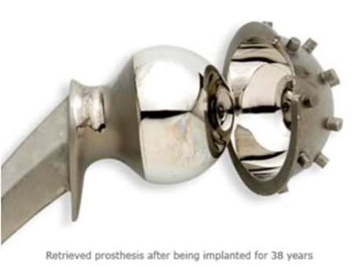
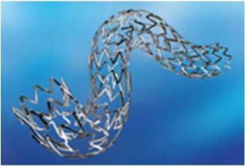

Les alliages cobalt-chrome
La tige d'une prothèse de genou ou de hanche est chargée des millions de fois, et on ne peut pas la remplacer facilement. Il faut un alliage qui ne casse pas en fatigue et qui s'use très peu. C'est le terrain des alliages cobalt-chrome.
Intuition
Le cobalt donne la base, le chrome forme une couche d'oxyde compacte qui protège de la corrosion et renforce l'alliage, le molybdène affine les grains. Résultat : un alliage plus rigide et plus résistant que l'inox, très dur, qui s'use peu. Le revers : il est très difficile à façonner à froid, et il est encore plus rigide que l'os qu'il remplace.
Formalisation
Deux types d'alliages cobalt-chrome :
- l'alliage Co-Cr-Mo, destiné à être coulé : utilisé depuis des décennies en médecine dentaire, et récemment pour les implants articulaires ;
- l'alliage Co-Ni-Cr-Mo, façonné par forgeage à chaud : relativement nouveau, pour les tiges de prothèses des articulations lourdement chargées (genou, hanche).
Quatre alliages sont recommandés pour les implants chirurgicaux : coulable Co-Cr-Mo (F75), forgeable Co-Cr-W-Ni (F90), forgeable Co-Ni-Cr-Mo (F562), forgeable Co-Ni-Cr-Mo-W-Fe (F563). Seuls deux sont fréquents : le coulable F75 et le forgeable F562. Le cobalt dépasse 60 % ; le molybdène forme des grains fins, d'où une meilleure résistance après coulée et forgeage ; le chrome améliore la résistance à la corrosion (couche d'oxyde compacte) et la résistance mécanique.
L'excellente résistance à la fatigue du forgeable Co-Ni-Cr-Mo le rend très approprié aux applications qui exigent une longue durée de vie sans rupture sous charge statique ou cyclique, comme les tiges de hanche, surtout quand l'implant est difficile à remplacer.
| Co20Cr35Ni10Mo | module de Young (MPa) | rupture min. (MPa) | limite élastique min. (MPa) | déformation min. (%) |
|---|---|---|---|---|
| recuit | \(2{,}35 \cdot 10^5\) | 800 | 300 | 40 |
| écroui à froid | \(2{,}35 \cdot 10^5\) | 1000 | 650 | 20 |
L'écrouissage à froid augmente nettement la résistance (le module ne change pas, la déformation possible diminue). Mais il est très difficile de façonner cet alliage à froid pour une grande pièce comme une tige de hanche : seul le forgeage à chaud est possible. Il résiste très bien à la corrosion sous contrainte dans l'eau de mer (ions chlore).
Usure et frottement
- Usure du forgeable Co-Ni-Cr-Mo semblable à celle du coulable : à peu près 0,14 mm/an contre un cotyle en polyéthylène.
- Le Co-Ni-Cr-Mo n'est pas recommandé pour les surfaces de frottement : mauvais coefficient de frottement avec lui-même ou un autre matériau.
- Prothèses métal sur métal en CoCrMo : faible usure grâce à la dureté et la ténacité ; usure linéaire moyenne de la prothèse McKee-Farrar de 4,2 µm/an.
- Couple métal-polyéthylène conventionnel (têtes de 22 à 32 mm), « standard » pendant près de quatre décennies : usure linéaire de 100 à 400 µm/an.
Le module de Young du Co-Cr est de 220 à 234 GPa, plus que l'inox : cela peut changer le transfert des efforts vers l'os, même si l'effet sur la fixation et la longévité n'est pas encore bien connu.
Ions libérés
Dans une solution de Ringer à 37 °C, le Co-Ni-Cr-Mo libère d'abord plus de nickel que l'inox 316L, puis la vitesse devient presque la même, alors qu'il contient environ trois fois plus de nickel. In vitro, les particules de cobalt et de nickel sont toxiques pour les cellules ; celles de Cr et de Co-Cr sont bien acceptées. Un implant en CoCr est une cause d'artefact en IRM.
Applications : prothèse totale de hanche, pièce fémorale, stents très fins grâce aux propriétés mécaniques, filtre cave (qui filtre le sang remontant des membres inférieurs), implants dentaires.


Exemple
Exemple ajouté. En 5 ans, une tête métal sur métal McKee-Farrar s'use de \(4{,}2 \times 5 = 21\) µm. Un couple métal-polyéthylène à 200 µm/an (milieu de la fourchette du cours) perd \(200 \times 5 = 1000\) µm, soit 1 mm : environ 48 fois plus.
Formules clés
F75 coulable (Co-Cr-Mo) et F562 forgeable (Co-Ni-Cr-Mo) ; Co > 60 % ; Mo : grains fins ; Cr : oxyde protecteur.
E = 220 à 234 GPa ; écroui : rupture 1000 MPa, limite 650 MPa (recuit : 800 et 300).
Usure : métal sur métal 4,2 µm/an ; métal-PE 100 à 400 µm/an ; Co-Ni-Cr-Mo contre PE 0,14 mm/an.
Forgeage à chaud seulement pour les grandes pièces ; artefacts d'IRM ; Co et Ni toxiques pour les cellules in vitro.